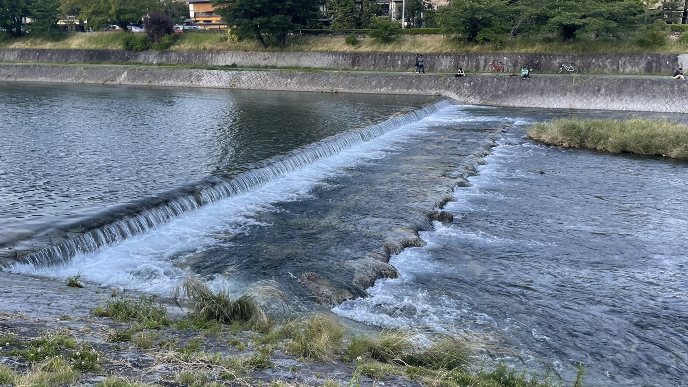
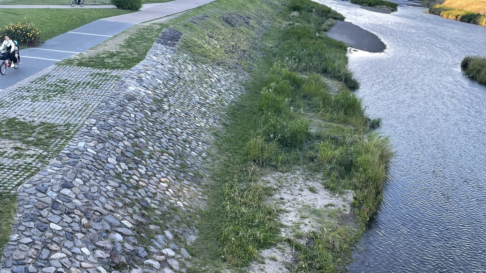
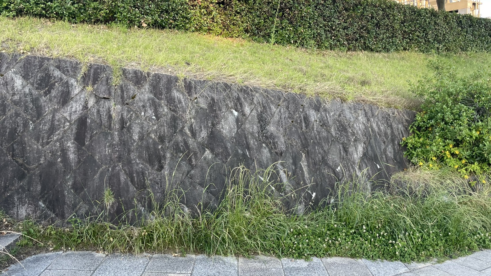
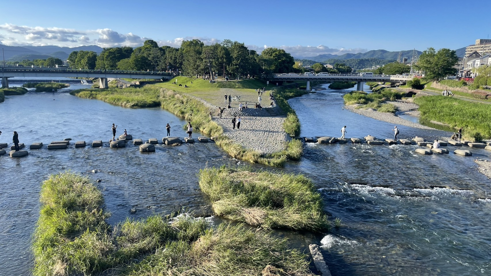
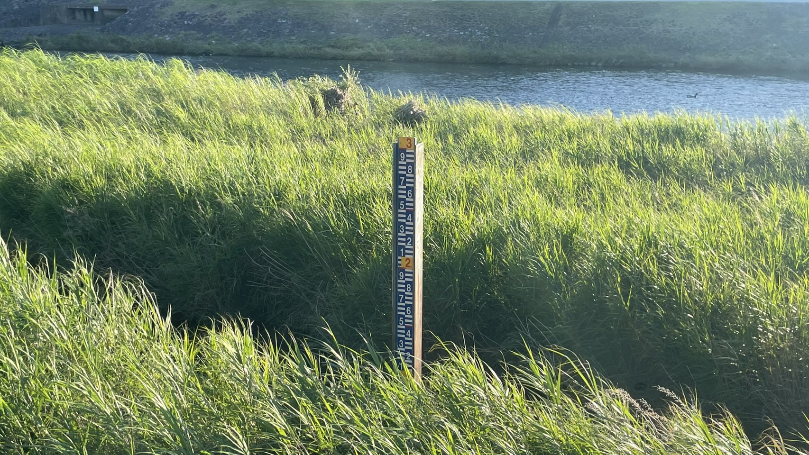
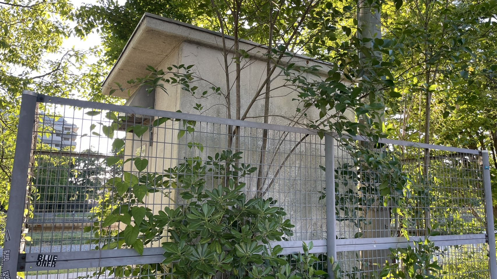
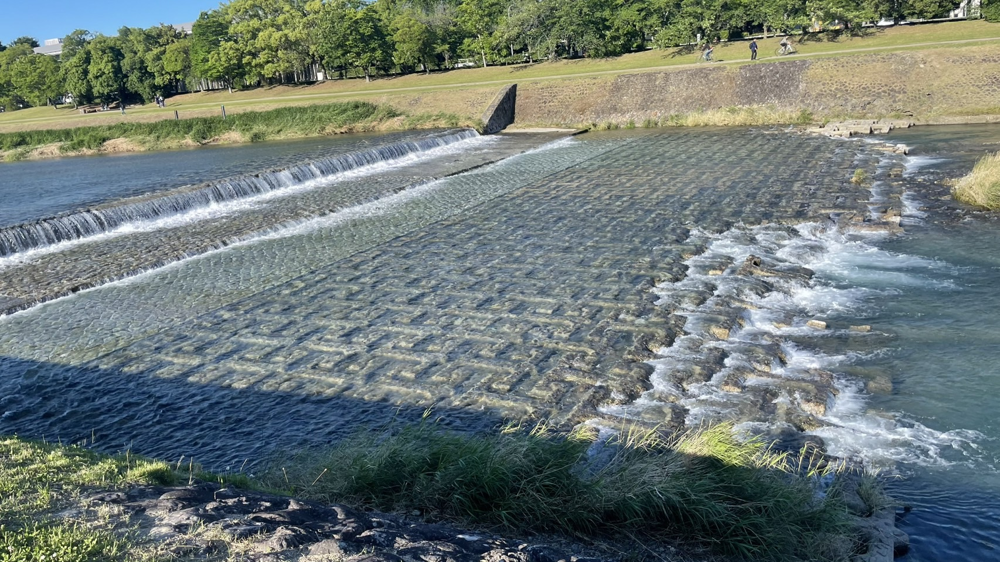
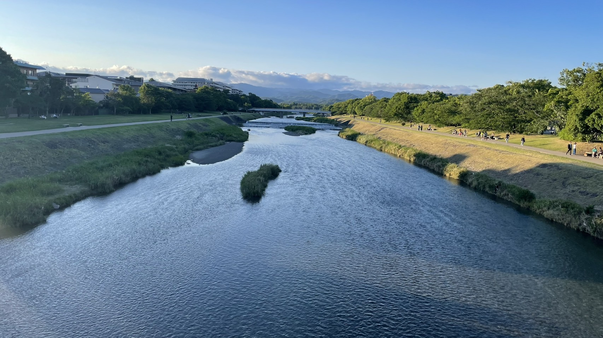
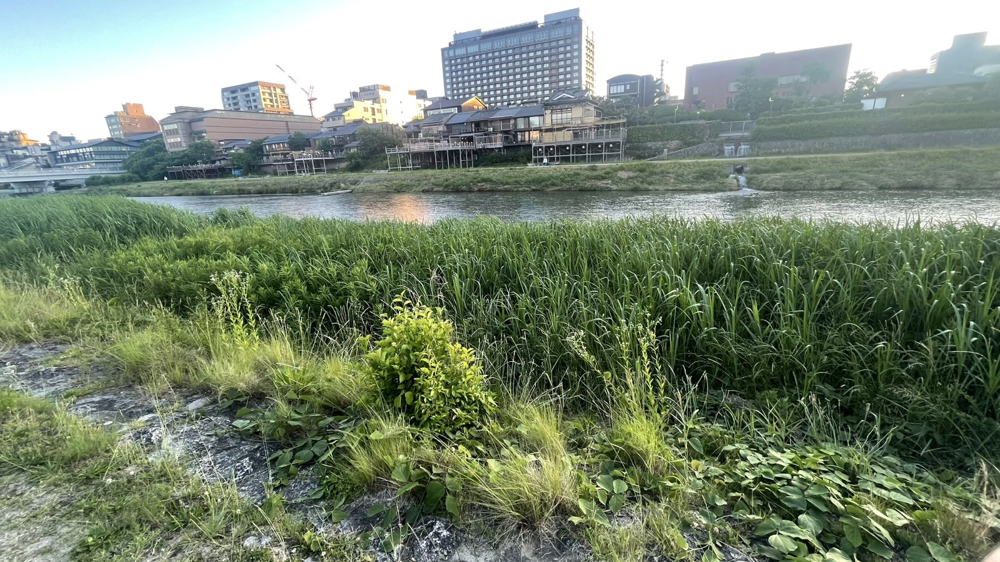

高瀬堰（たかせぜき）
場所: 三条大橋のすぐ南側
見どころ: 川の水位を調整する重要な堰で、川の流れを制御している様子を観察できます。

石垣護岸（いしがきごがん）
場所: 鴨川デルタから四条大橋にかけて
見どころ: 伝統的な石積みの護岸を間近で見ることができます。

堤防（ていぼう）
場所: 出町柳から五条大橋
見どころ: 両岸の堤防は整備され、歩きながら景観も楽しめます。

分流施設（ぶんりゅうしせつ）
場所: 鴨川デルタ（出町柳付近）
見どころ: 洪水時に水を賀茂川・高野川へと分流させる仕組みが見られます。

量水標（りょうすいひょう）
場所: 様々な橋の橋脚や川岸に設置
見どころ: 川の水位を目視で確認するためのスケールで、現地での水位把握に役立っています。

鴨川荒神橋水位観測所（テレメーター）
場所: 荒神橋西詰
見どころ: 雨量や水位をリアルタイムで計測・送信する電子観測所。データは防災情報として活用されます。

帯工（おびこう）
場所: 鴨川の川底各所
見どころ: 川の流れを緩やかにし、河床の浸食を防ぐために川底に設けられた帯状の構造物です。

河川改修（かせんかいしゅう）
場所: 丸太町橋周辺
見どころ: 川底の掘削や川幅の拡張によって治水機能が向上しています。

自然と調和した治水技術
場所: 三条〜七条大橋間
見どころ: ビオトープや植栽など、景観と調和した現代的治水の姿です。

治水技術マップ
- 三条大橋: 高瀬堰、石垣護岸
- 四条大橋: 石垣護岸
- 鴨川デルタ（出町柳）: 分流施設、自然調和型治水
- 荒神橋: テレメーター観測所
- 丸太町橋: 河川改修